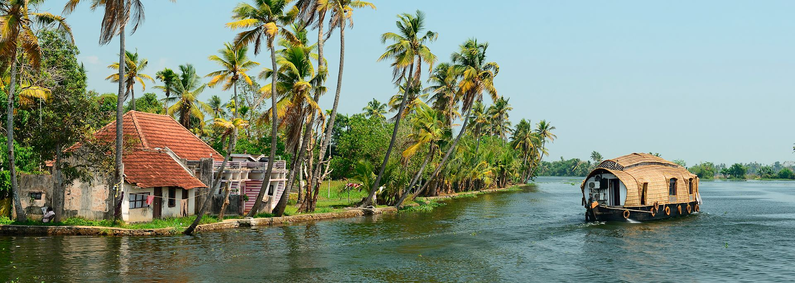

Tourism in India has shown a phenomenal growth in the past decade. One of the reasons is that the Ministry of tourism, India has realized the immense potential of tourism in India during vacations. India travel tourism has grown rapidly with a great influx of tourists from all across the globe who have been irresistibly attracted to the rich culture, heritage, and incredible natural beauty of India. India tourism with its foggy hill stations, captivating beaches, historical monuments, golden deserts, serene backwaters, pilgrimage sites, rich wildlife, and colourful fairs capture the heart of every tourist. In addition, a variety of festivals, lively markets, vibrant lifestyle, and traditional Indian hospitality, will make your experience as an india tourist truly unforgettable and fantastic. Travel through the lovely Indian states and discover closely the resplendent colors and rich cultural locales of this incredible land. Our India tourism guide provides you a glimpse of travel and tourism in india ,india tourism information about south india tourism, north India tourism, and all the major tourist destinations, and tourism services of India